Module 7 Data Visualization
Learning goals
- How to visualize data using
ggplot(aka take data and make pretty pictures) - How to save plots
The importance of data viz
Humans are wired to process information through pictures. We can translate images into meaning with amazing speed.
Another way to say it; pictures communicate data. This is why research and data visualization nearly always go hand in hand.
The point here is that great data visualizations are not simply pretty. Much more importantly, they are effective too. They are the best means you have of conveying insights from your data to someone else.
Keep in mind that plots can be effective and misleading at the same time. There is a politics to plots and maps; they can have agendas, and they can manipulate viewers into interpreting the data in certain ways. So, it is incomplete for us to say simply that a good plot is an effective plot. Here’s a better definition: a good plot is one that is both effective and fair.
So, when you are viewing other people’s plots and making plots of your own, keep these five rules in mind:
- A bad plot is an ineffective one, even if it is beautiful.
- A good plot is an effective plot.
- A great plot is one that is both effective and beautiful.
- If you ever have to make a trade-off between effectiveness and beauty, sacrifice beauty.
- Any plot that misleads or manipulates the viewer is bad, no matter how effective or beautiful it is.
Here is an excellent talk by the Egyptian data scientist, David McCandless, about the beauty of data visualization (link here).
And this is a video that every person working with data visualizations should watch to get a sense of what can be done with data visualization and just how enthusiastic researchers get about data viz. Enjoy this video by the Swedish epidemiologist Hans Rosling, the pioneer of interactive data visualization (link here).
First steps to data viz
Do penguins with longer flippers weigh more or less than penguins with shorter flippers? What does the relationship between flipper length and body mass look like? Is it positive? Negative? Linear? Nonlinear? Does the relationship vary by species of the penguin? How about where the penguin lives?
Let’s create visualizations that we can use to answer these questions.
The penguins Data Frame
Your answers to the questions above are in the penguins data frame found in palmerpenguins.
To access the dataset and necessary features to build a plot, load the following libraries:
You might not know what a library is right now, but trust the process. You will learn as we go.
penguins is a dataframe stored in the package palmerpenguins, which was made available by Dr. Kristen Gorman and the Palmer Station, Antarctica LTER.
A data frame is a rectangular collection of variables (in columns) and observations (in rows).
To make the discussion easier, let’s define some terms:
- Variable - a quantity, quality or property that you can measure
- Value - the state of a variable when you measure it. The value of a variable may change from measurement to measurement.
- Observation - A set of measurements made under similar conditions (you usually make all the measurements in an observation at the same time and on the same object). An observation will contain several values, each associated with a different variable. We’ll sometimes refer to an observation as a data point.
- Tabular data - A set of values, each associated with a variable and an observation. Tabular data is tidy if each value is placed in its own ‘cell’, each variable in its own column, and each observation in its own row.
Type the following:
penguins
## # A tibble: 344 × 8
## species island bill_length_mm bill_depth_mm flipper_length_mm body_mass_g
## <fct> <fct> <dbl> <dbl> <int> <int>
## 1 Adelie Torgersen 39.1 18.7 181 3750
## 2 Adelie Torgersen 39.5 17.4 186 3800
## 3 Adelie Torgersen 40.3 18 195 3250
## 4 Adelie Torgersen NA NA NA NA
## 5 Adelie Torgersen 36.7 19.3 193 3450
## 6 Adelie Torgersen 39.3 20.6 190 3650
## 7 Adelie Torgersen 38.9 17.8 181 3625
## 8 Adelie Torgersen 39.2 19.6 195 4675
## 9 Adelie Torgersen 34.1 18.1 193 3475
## 10 Adelie Torgersen 42 20.2 190 4250
## # ℹ 334 more rows
## # ℹ 2 more variables: sex <fct>, year <int>What do you see? How many columns are there? Note that it says tibble on top of this preview. In the tidyverse, we use special data frames called tibbles
What do you see with this?
What are the variables in penguins?
Creating a ggplot
With ggplot2, you begin with the function ggplot(), defining a plot object that you then add layers to. Type the following:

Why is the plot empty?
ggplot(data = penguins) creates an empty graph that is ready to explain the penguins data, but since we haven’t told it to visualize it yet, for now it’s empty. You can think of it like an empty canvas where you’ll paint the remaining layers of your plot.
What do we need to do next then?
Tell ggplot() how the information from our data will be visualized. The mapping argument of ggplot() function defines how variables in your dataset are mapped to visual properties (aesthetics) of your plot. The mapping argument is always defined in the aes() function, and the x and y arguments of aes() specify which variables to map to the x- and y- axes. According to the code below, what will we be on the x- and y- axes? What do you see when you run the code below?
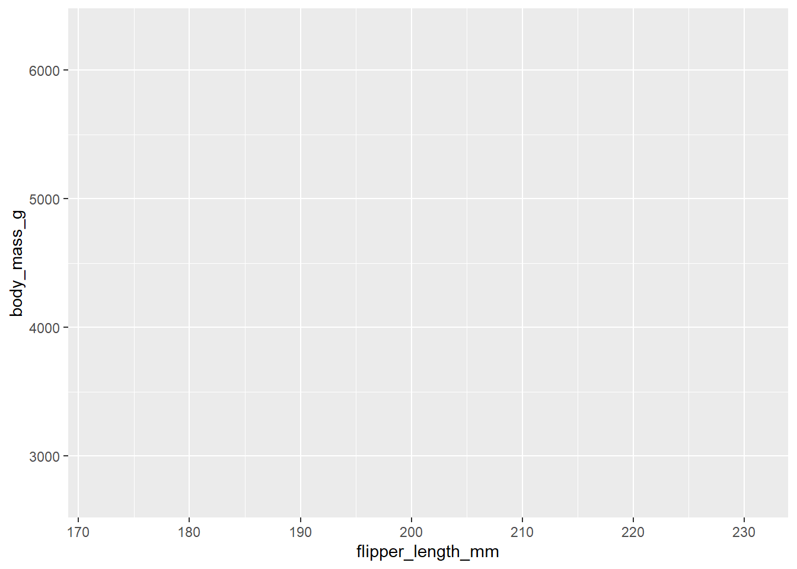
Let’s put the penguins on the plot now. To do so, we need to define a geom: a geometrical object that a plot uses to represent data. You can do this in ggplot() using functions that start with geom_.
Different types of geom_ functions are geom_bar(), geom_line(), geom_boxplot(), geom_point(). What kinds of plots do you think these make?
Let’s use the function geom_point() to add layers of points to your plot, which creates a scatterplot.
ggplot(data = penguins,
mapping = aes(x = flipper_length_mm, y = body_mass_g)) +
geom_point()
## Warning: Removed 2 rows containing missing values or values outside the scale range
## (`geom_point()`).
Now that we can see our data, what does the relationship between flipper length and body mass look like? Positive?
Before moving on, let’s review the warning message we got: "Removed 2 rows containing missing values (geom_point()).
What does this mean? There are two penguins in our dataset with missing body mass and/or flipper length values.
Why would they not appear on the graph? Because ggplot2 has no way or representing them on the plot without both values, and missing values should never silently go missing.
Adding aesthetics and layers
Scatterplots are useful for displaying the relationship between two numerical variables, but it’s always a good idea to be skeptical of any apparent relationship between two variables and ask if there may be other variables that explain or chant the nature of this apparent relationship. What’s a variable that may be influencing this relationship?
Would incorporating species into our plot reveal any additional insights? Yes, it would. Let’s do this by representing species with different colored points. To acheive this, would we modify the aesthetic or the geom?
ggplot(data = penguins,
mapping = aes(x = flipper_length_mm,
y = body_mass_g,
color = species)) +
geom_point()
Did we assign a color to each species intentionally?
ggplot2 will automatically assign a unique value of the aesthetic (here a unique color) to each unique level of the variable (each of the three species), a process known as scaling. ggplot2 also adds a legend.
Next let’s add another layer: a smooth curve displaying the relationship between body mass and flipper length. How can we add this to the existing plot?
Since this is a new geometric object representing our data, we will add a new geom as a layer on top of our point geom: geom_smooth(). And we will specify that we want to draw the line of best fit based on a linear model with method = "lm".
ggplot(data = penguins,
mapping = aes(x = flipper_length_mm,
y = body_mass_g,
color = species)) +
geom_point() +
geom_smooth(method = "lm")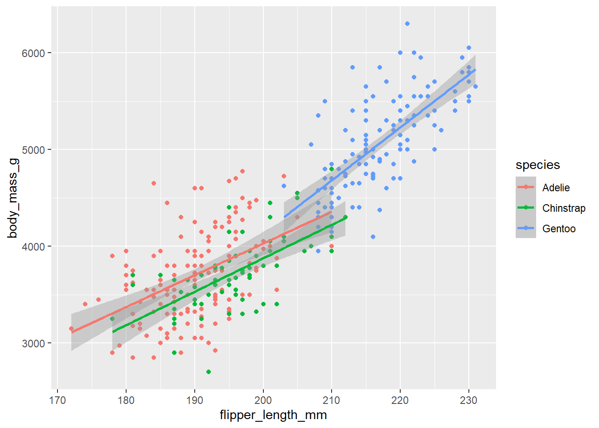
Does your plot look like the plot from the Ultimate Goal?
When aesthetic mappings are defined in ggplot(), at the global level, they’re passed down to each of the subsequent geom layers of the plot. However, each geom function in ggplot2 can take a mapping argument, which allows for aesthetic mappings at the local level that are added to those inherited from the global level.
How can we get the points to be colored based on species but not have the lines separated out for them?
ggplot(data = penguins,
mapping = aes(x = flipper_length_mm, y = body_mass_g)) +
geom_point(mapping = aes(color = species, shape = species)) +
geom_smooth(method = "lm")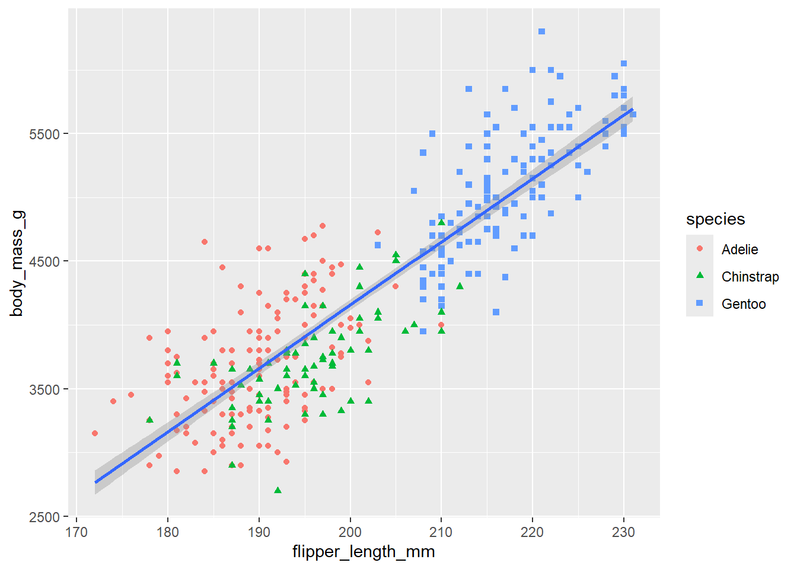
What happened to the legend? It was updated.
Finally, let’s add/update our labels and improve the color palette to be color-blind safe with a function from the ggthemes package.
ggplot(
data = penguins,
mapping = aes(x = flipper_length_mm,
y = body_mass_g)
) +
geom_point(aes(color = species,
shape = species)) +
geom_smooth(method = "lm") +
labs(
title = "Body mass and flipper length",
subtitle = "Dimensions for Adelie, Chinstrap, and Gentoo Penguins",
x = "Flipper length (mm)", y = "Body mass (g)",
color = "Species", shape = "Species"
) +
scale_color_colorblind()
ggplot2 calls
Look at the following. Does this code work? What’s different about it?
This shorthand form of code works, but the following also works:

Categorical Variables
What is a categorical variable? A variable is categorical if it can take only a small set of values.
How can you visualize a categorical variable? Make a bar chart and find out.

We can also organize the categorical variables. Instead of having nonordered levels, let’s order them. How are they ordered below?
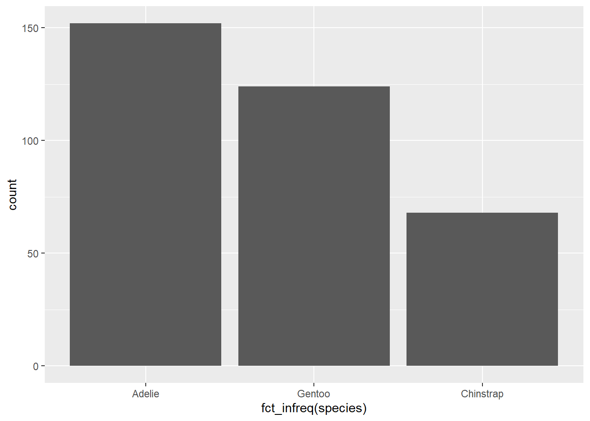
A numerical variable
What is a numerical (or quantitative) variable? A variable is numerical if it can take on a wide range of numerical values and it is sensible to add, subtract, or take averages with those values.
What is a commonly used visualization for distributions of continuous variables? A histogram.
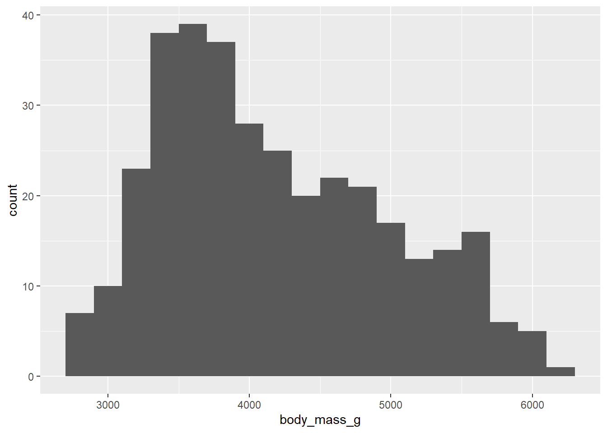
A histogram divides the x-axis into equally spaced bins and then uses the height of a bar to display the number of observations that fall in each bin. How many observations are in the tallest bar?
Set the width of the bin to 20. Is this good? No, it is too narrow resulting in many bars, making it difficult to determine the shape of the ditribution. What about 2000? It’s too high making it difficult to determine the shape of the distribution? What about 200?
Another way to visualize numerical variables is a density plot. What is a density plot? It is a smoothed-out version of a histogram. We won’t go into how geom_density() estimates the density (read this in the funciton documentation). But imagine a histogram made with wooden blocks and then you drape a piece of spaghetti over it. The shape of the spaghetti is the shape of the density curve and makes it easy to quickly see the distribution.

Mapping a numerical and categorical variable
What plot can we use? What about side-by-side box plots. Let’s make a boxplot and then explain what it is showing.

- The box indicates the range of the middle halfe of the data (interquartile range: IQR), stretching from the 25th percentile of the distribution to the 75th percentile. In the middle of the box is the median (50th percentile). These three lines give you a sense of the spread of distribution (is it symmetric or skewed to one side?).
- Visual points display observations that fall more than 1.5 times the IQR from either edge of the box.
- A line (or whisker) that extends from each end of the box and goes to the farthest outlying point.
We can also do the following:
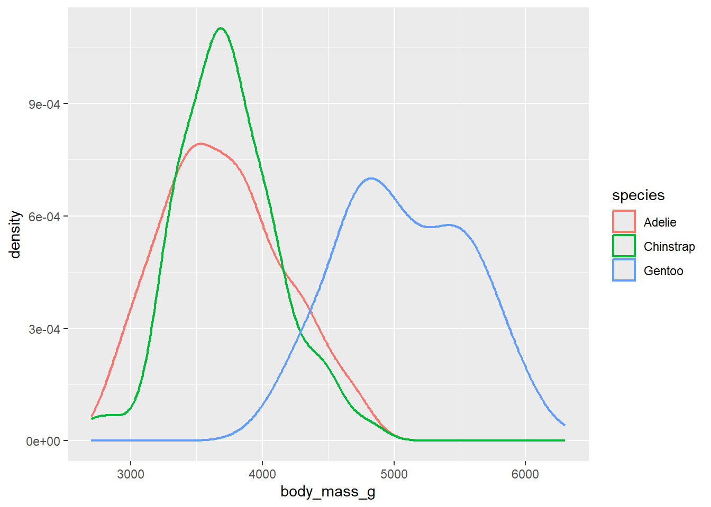
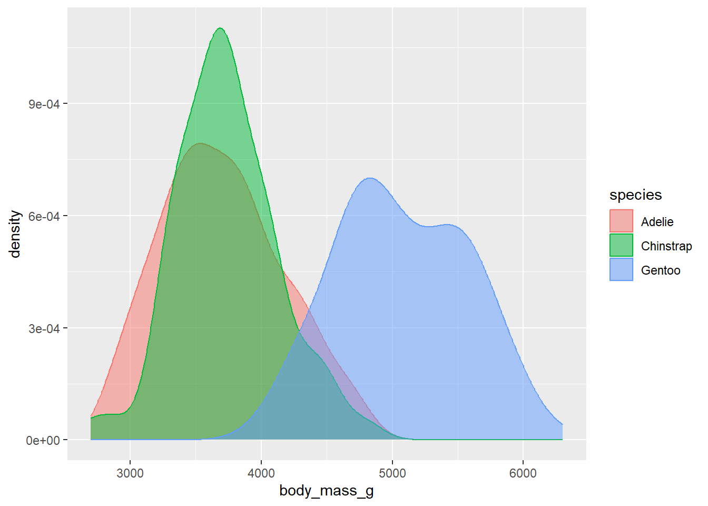
Two categorical variables
Let’s show you how to do it.
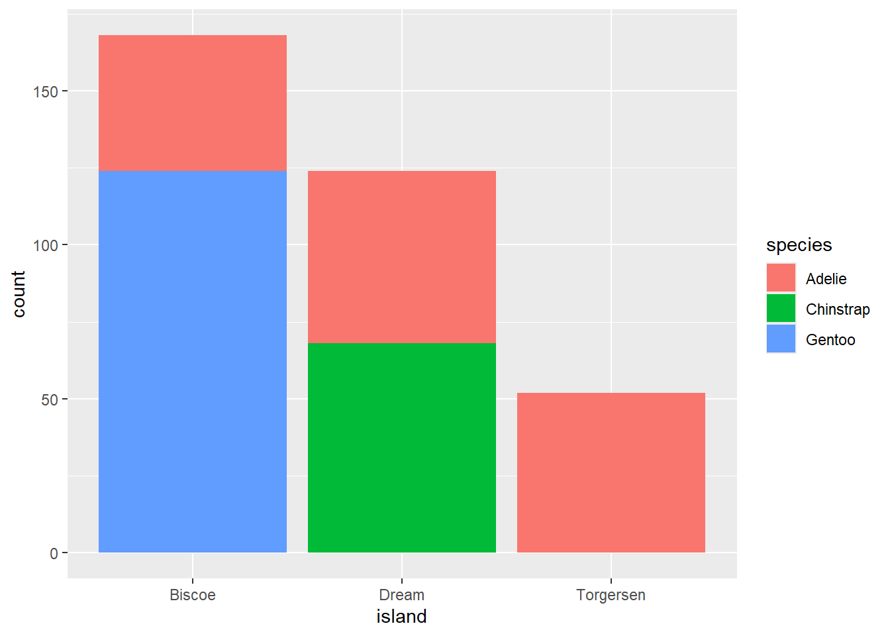
What’s the difference with this?
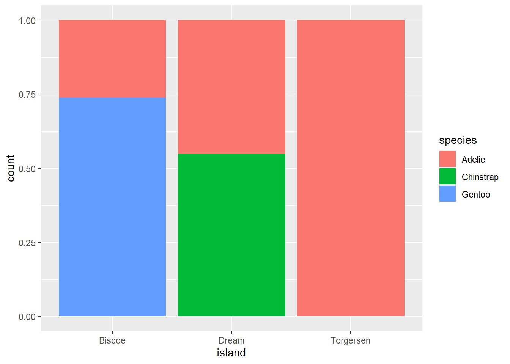
Or this?
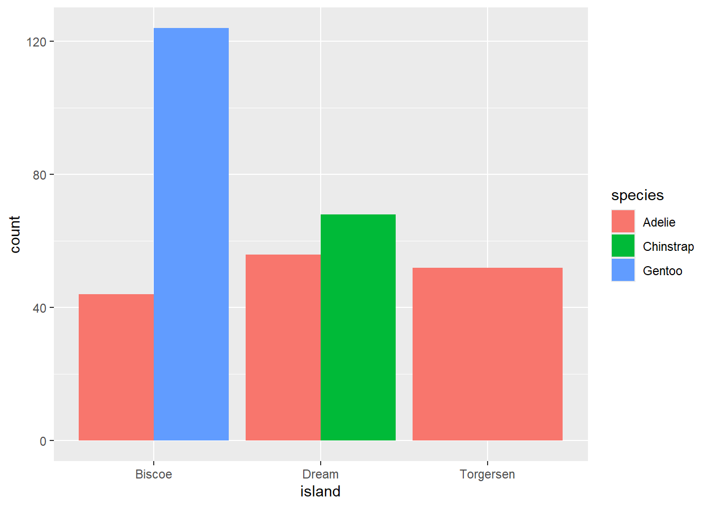
Three or more variables
ggplot(penguins, aes(x = flipper_length_mm, y = body_mass_g)) +
geom_point(aes(color = species, shape = island))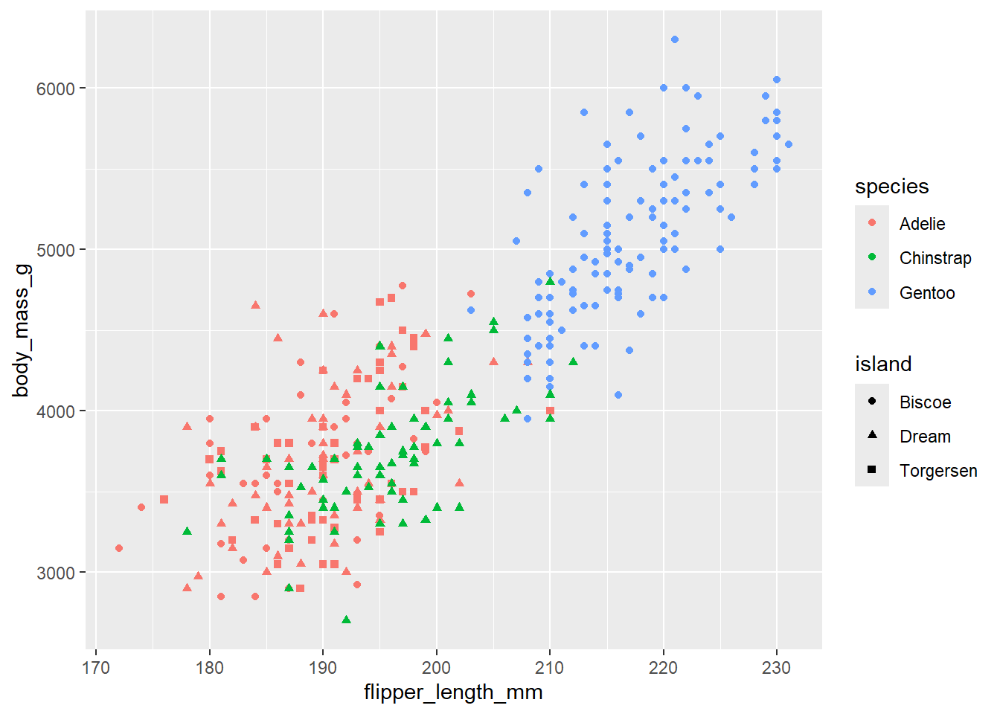
Adding too many aesthetic mappings to a plot can make it cluttered and difficult to make sense of. So here is another option:
ggplot(penguins, aes(x = flipper_length_mm, y = body_mass_g)) +
geom_point(aes(color = species, shape = species)) +
facet_wrap(~island)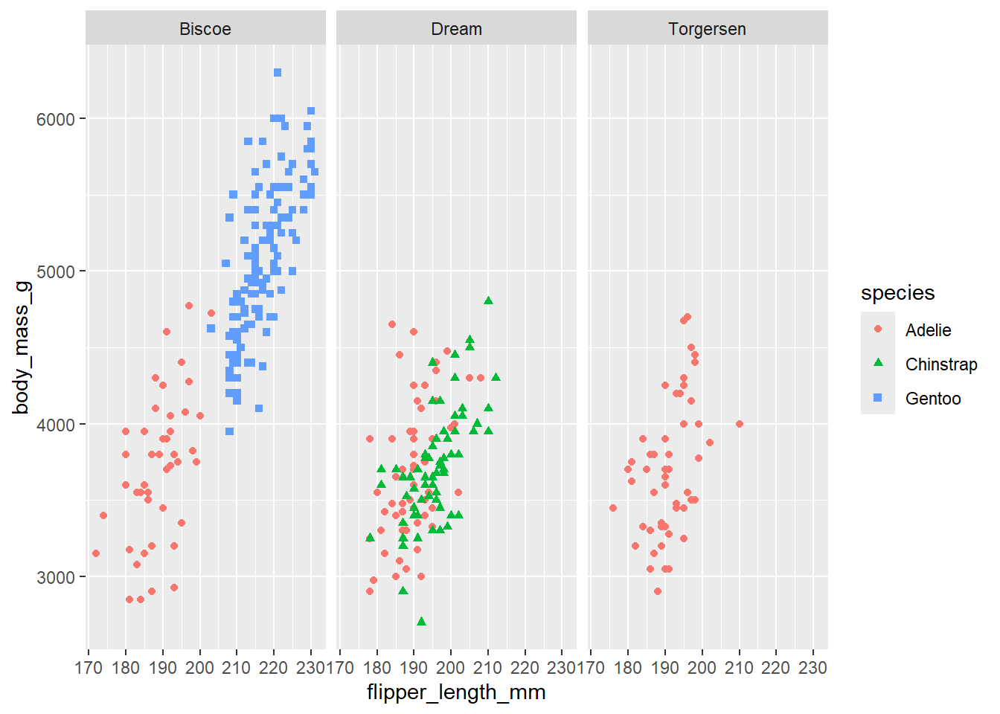

Exercise 4 (see book)
*NOTE: The beginning of this chapter was information adapted from datascience.pizza. The second half is adapted from R for Data Science to organize the information for teaching, but it will be removed and replaced with a link to the website after the course.